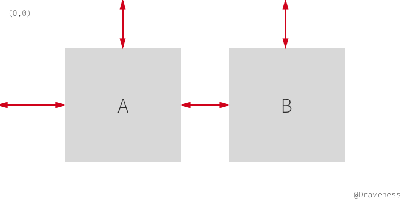
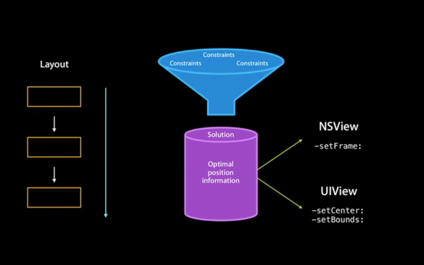
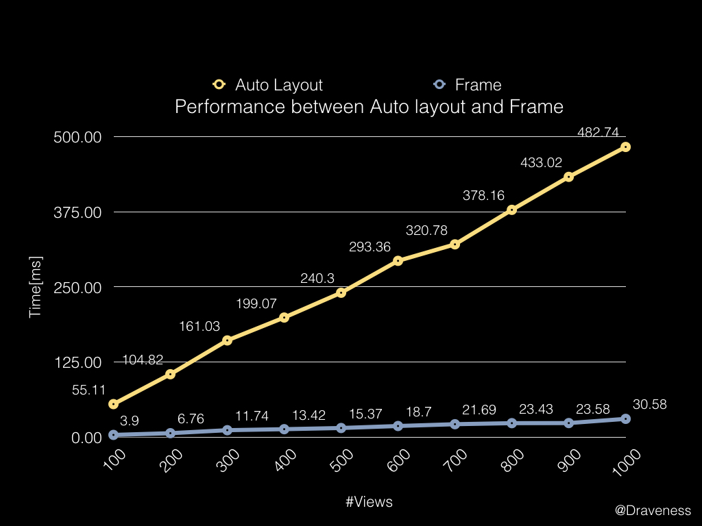
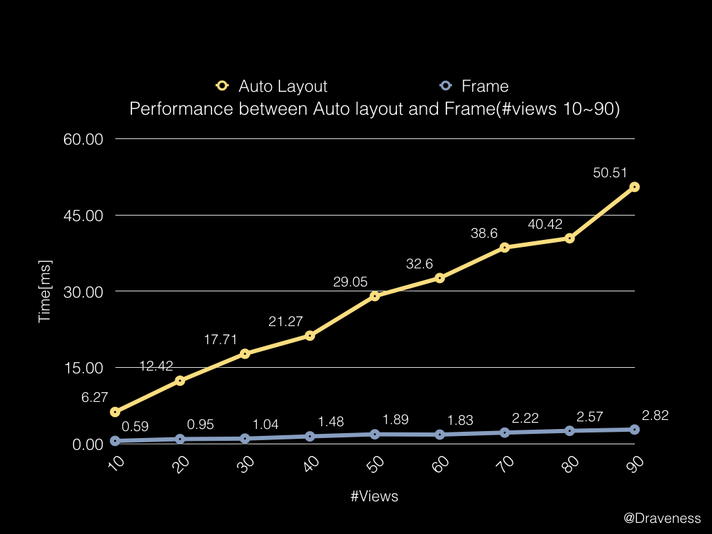
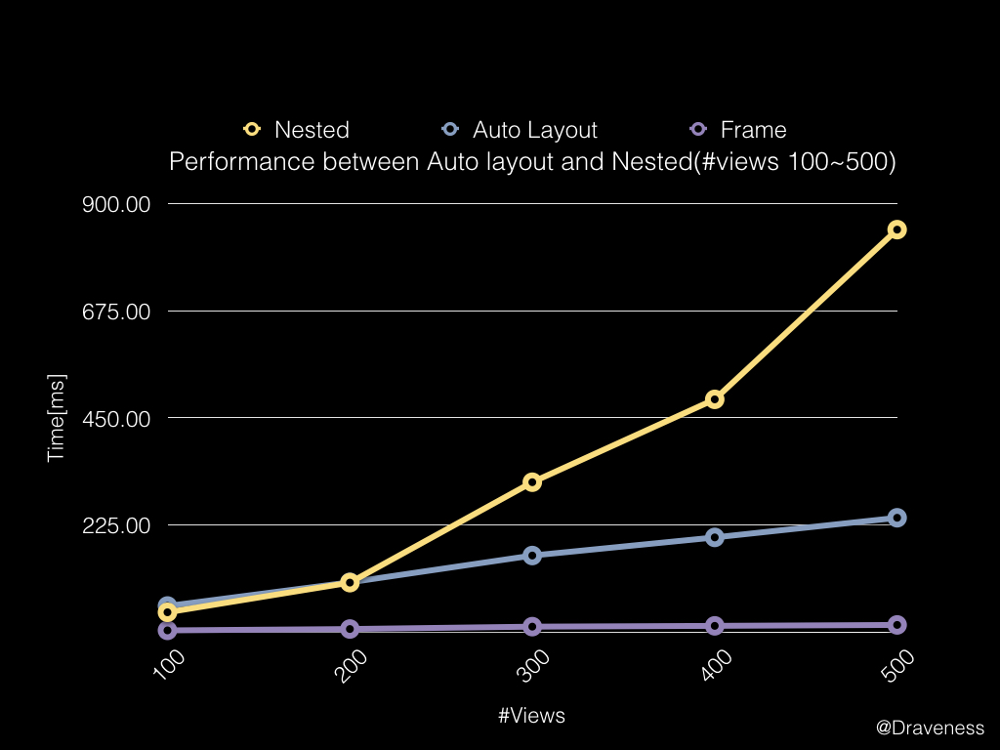
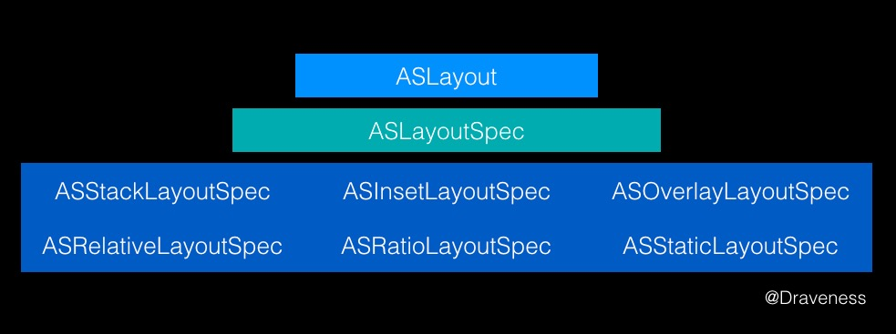
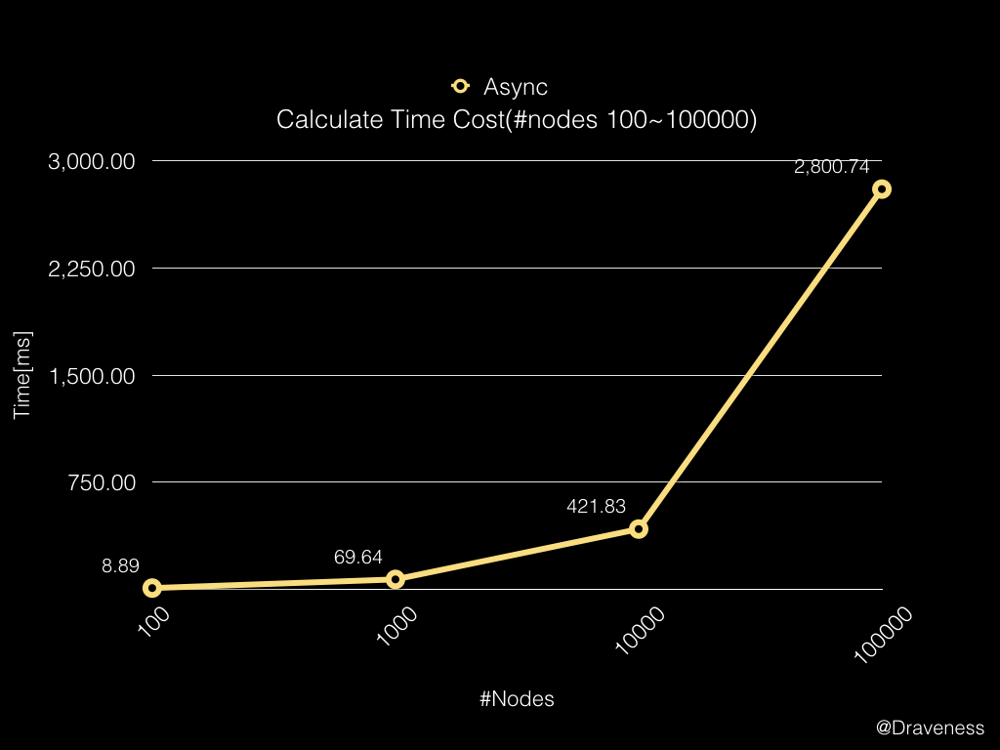

从 Auto Layout 的布局算法谈性能
这是使用 ASDK 性能调优系列的第二篇文章，前一篇文章中讲到了如何提升 iOS 应用的渲染性能，你可以点击 这里 了解这部分的内容。
在上一篇文章中，我们提到了 iOS 界面的渲染过程以及如何对渲染过程进行优化。ASDK 的做法是将渲染绘制的工作抛到后台线程进行，并在每次 Runloop 结束时，将绘制结果交给 CALayer 进行展示。
而这篇文章就要从 iOS 中影响性能的另一大杀手，也就是万恶之源 Auto Layout（自动布局）来分析如何对 iOS 应用的性能进行优化以及 Auto Layout 到底为什么会影响性能？
把 Auto Layout 批判一番
由于在 2012 年苹果发布了 4.0 寸的 iPhone5，在 iOS 平台上出现了不同尺寸的移动设备，使得原有的 frame 布局方式无法很好地适配不同尺寸的屏幕，所以，为了解决这一问题 Auto Layout 就诞生了。
Auto Layout 的诞生并没有如同苹果的其它框架一样收到开发者的好评，它自诞生的第一天起就饱受 iOS 开发者的批评，其蹩脚、冗长的语法使得它在刚刚面世就被无数开发者吐槽，写了几个屏幕的代码都不能完成一个简单的布局，哪怕是 VFL（Visual Format Language）也拯救不了它。
真正使 Auto Layout 大规模投入使用的应该还是 Masonry，它使用了链式的语法对 Auto Layout 进行了很好的封装，使得 Auto Layout 更加简单易用；时至今日，开发者也在日常使用中发现了 Masonry 的各种问题，于是出现了各种各样的布局框架，不过这都是后话了。
Auto Layout 的原理和 Cassowary
Auto Layout 的原理其实非常简单，在这里通过一个例子先简单的解释一下：

iOS 中视图所需要的布局信息只有两个，分别是 origin/center 和 size，在这里我们以 origin & size 为例，也就是 frame 时代下布局的需要的两个信息；这两个信息由四部分组成：
x&ywidth&height
以左上角的 (0, 0) 为坐标的原点，找到坐标 (x, y)，然后绘制一个大小为 (width, height) 的矩形，这样就完成了一个最简单的布局。而 Auto Layout 的布局方式与上面所说的 frame 有些不同，frame 的原理是与父视图之间的绝对距离，但是 Auto Layout 中大部分的约束都是描述性的，表示视图间相对距离，以上图为例：
A.left = Superview.left + 50
A.top = Superview.top + 30
A.width = 100
A.height = 100
B.left = (A.left + A.width)/(A.right) + 30
B.top = A.top
B.width = A.width
B.height = A.height
虽然上面的约束很好的表示了各个视图之间的关系，但是 Auto Layout 实际上并没有改变原有的 Hard-Coded 形式的布局方式，只是将原有没有太多意义的 (x, y) 值，变成了描述性的代码。
我们仍然需要知道布局信息所需要的四部分 x、y、width 以及 height。换句话说，我们要求解上述的八元一次方程组，将每个视图所需要的信息解出来；Cocoa 会在运行时求解上述的方程组，最终使用 frame 来绘制视图。

Cassowary 算法
在上世纪 90 年代，一个名叫 Cassowary) 的布局算法解决了用户界面的布局问题，它通过将布局问题抽象成线性等式和不等式约束来进行求解。
Auto Layout 其实就是对 Cassowary 算法的一种实现，但是这里并不会对它展开介绍，有兴趣的读者可以在文章最后的 Reference 中了解一下 Cassowary 算法相关的文章。
Auto Layout 的原理就是对线性方程组或者不等式的求解。
Auto Layout 的性能
在使用 Auto Layout 进行布局时，可以指定一系列的约束，比如视图的高度、宽度等等。而每一个约束其实都是一个简单的线性等式或不等式，整个界面上的所有约束在一起就明确地（没有冲突）定义了整个系统的布局。
在涉及冲突发生时，Auto Layout 会尝试 break 一些优先级低的约束，尽量满足最多并且优先级最高的约束。
因为布局系统在最后仍然需要通过 frame 来进行，所以 Auto Layout 虽然为开发者在描述布局时带来了一些好处，不过它相比原有的布局系统加入了从约束计算 frame 的过程，而在这里，我们需要了解 Auto Layout 的布局性能如何。
因为使用 Cassowary 算法解决约束问题就是对线性等式或不等式求解，所以其时间复杂度就是多项式时间的，不难推测出，在处理极其复杂的 UI 界面时，会造成性能上的巨大损失。
在这里我们会对 Auto Layout 的性能进行测试，为了更明显的展示 Auto Layout 的性能，我们通过 frame 的性能建立一条基准线以消除对象的创建和销毁、视图的渲染、视图层级的改变带来的影响。
你可以在 这里 找到这次对 Layout 性能测量使用的代码。
代码分别使用 Auto Layout 和 frame 对 N 个视图进行布局，测算其运行时间。
使用 AutoLayout 时，每个视图会随机选择两个视图对它的 top 和 left 进行约束，随机生成一个数字作为 offset；同时，还会用几个优先级高的约束保证视图的布局不会超出整个 keyWindow。
而下图就是对 100~1000 个视图布局所需要的时间的折线图。
这里的数据是在 OS X EL Captain，Macbook Air (13-inch Mid 2013）上的 iPhone 6s Plus 模拟器上采集的， Xcode 版本为 7.3.1。在其他设备上可能不会获得一致的信息，由于笔者的 iPhone 升级到了 iOS 10，所以没有办法真机测试，最后的结果可能会有一定的偏差。

从图中可以看到，使用 Auto Layout 进行布局的时间会是只使用 frame 的 16 倍左右，虽然这里的测试结果可能受外界条件影响差异比较大，不过 Auto Layout 的性能相比 frame 确实差很多，如果去掉设置 frame 的过程消耗的时间，Auto Layout 过程进行的计算量也是非常巨大的。
在上一篇文章中，我们曾经提到，想要让 iOS 应用的视图保持 60 FPS 的刷新频率，我们必须在 1/60 = 16.67 ms 之内完成包括布局、绘制以及渲染等操作。
也就是说如果当前界面上的视图大于 100 的话，使用 Auto Layout 是很难达到绝对流畅的要求的；而在使用 frame 时，同一个界面下哪怕有 500 个视图，也是可以在 16.67 ms 之内完成布局的。不过在一般情况下，在 iOS 的整个 UIWindow 中也不会一次性出现如此多的视图。
我们更关心的是，在日常开发中难免会使用 Auto Layout 进行布局，既然有 16.67 ms 这个限制，那么在界面上出现了多少个视图时，我才需要考虑其它的布局方式呢？在这里，我们将需要布局的视图数量减少一个量级，重新绘制一个图表：

从图中可以看出，当对 30 个左右视图使用 Auto Layout 进行布局时，所需要的时间就会在 16.67 ms 左右，当然这里不排除一些其它因素的影响；到目前为止，会得出一个大致的结论，使用 Auto Layout 对复杂的 UI 界面进行布局时（大于 30 个视图）就会对性能有严重的影响（同时与设备有关，文章中不会考虑设备性能的差异性）。
上述对 Auto Layout 的使用还是比较简单的，而在日常使用中，使用嵌套的视图层级又非常正常。
在笔者对嵌套视图层级中使用 Auto Layout 进行布局时，当视图的数量超过了 500 时，模拟器直接就 crash 了，所以这里没有超过 500 个视图的数据。
我们对嵌套视图数量在 100~500 之间布局时间进行测量，并与 Auto Layout 进行比较：

在视图数量大于 200 之后，随着视图数量的增加，使用 Auto Layout 对嵌套视图进行布局的时间相比非嵌套的布局成倍增长。
虽然说 Auto Layout 为开发者在多尺寸布局上提供了遍历，而且支持跨越视图层级的约束，但是由于其实现原理导致其时间复杂度为多项式时间，其性能损耗是仅使用 frame 的十几倍，所以在处理庞大的 UI 界面时表现差强人意。
在三年以前，有一篇关于 Auto Layout 性能分析的文章，可以点击这里了解这篇文章的内容 Auto Layout Performance on iOS。
ASDK 的布局引擎
Auto Layout 不止在复杂 UI 界面布局的表现不佳，它还会强制视图在主线程上布局；所以在 ASDK 中提供了另一种可以在后台线程中运行的布局引擎，它的结构大致是这样的：

ASLayoutSpec 与下面的所有的 Spec 类都是继承关系，在视图需要布局时，会调用 ASLayoutSpec 或者它的子类的 - measureWithSizeRange: 方法返回一个用于布局的对象 ASLayout。
ASLayoutable是 ASDK 中一个协议，遵循该协议的类实现了一系列的布局方法。
当我们使用 ASDK 布局时，需要做下面四件事情中的一件：
- 提供
layoutSpecBlock - 覆写
- layoutSpecThatFits:方法 - 覆写
- calculateSizeThatFits:方法 - 覆写
- calculateLayoutThatFits:方法
只有做上面四件事情中的其中一件才能对 ASDK 中的视图或者说结点进行布局。
方法 - calculateSizeThatFits: 提供了手动布局的方式，通过在该方法内对 frame 进行计算，返回一个当前视图的 CGSize。
而 - layoutSpecThatFits: 与 layoutSpecBlock 其实没什么不同，只是前者通过覆写方法返回 ASLayoutSpec；后者通过 block 的形式提供一种不需要子类化就可以完成布局的方法，两者可以看做是完全等价的。
- calculateLayoutThatFits: 方法有一些不同，它把上面的两种布局方式：手动布局和 Spec 布局封装成了一个接口，这样，无论是 CGSize 还是 ASLayoutSpec 最后都会以 ASLayout 的形式返回给方法调用者。
手动布局
这里简单介绍一下手动布局使用的 -[ASDisplayNode calculatedSizeThatFits:] 方法，这个方法与 UIView 中的 -[UIView sizeThatFits:] 非常相似，其区别只是在 ASDK 中，所有的计算出的大小都会通过缓存来提升性能。
- (CGSize)calculateSizeThatFits:(CGSize)constrainedSize {
return _preferredFrameSize;
}
子类可以在这个方法中进行计算，通过覆写这个方法返回一个合适的大小，不过一般情况下都不会使用手动布局的方式。
使用 ASLayoutSpec 布局
在 ASDK 中，更加常用的是使用 ASLayoutSpec 布局，在上面提到的 ASLayout 是一个保存布局信息的媒介，而真正计算视图布局的代码都在 ASLayoutSpec 中；所有 ASDK 中的布局（手动 / Spec）都是由 -[ASLayoutable measureWithSizeRange:] 方法触发的，在这里我们以 ASDisplayNode 的调用栈为例看一下方法的执行过程：
-[ASDisplayNode measureWithSizeRange:]
-[ASDisplayNode shouldMeasureWithSizeRange:]
-[ASDisplayNode calculateLayoutThatFits:]
-[ASDisplayNode layoutSpecThatFits:]
-[ASLayoutSpec measureWithSizeRange:]
+[ASLayout layoutWithLayoutableObject:constrainedSizeRange:size:sublayouts:]
-[ASLayout filteredNodeLayoutTree]
ASDK 的文档中推荐在子类中覆写 - layoutSpecThatFits: 方法，返回一个用于布局的 ASLayoutSpec 对象，然后使用 ASLayoutSpec 中的 - measureWithSizeRange: 方法对它指定的视图进行布局，不过通过覆写 ASDK 的布局引擎 一节中的其它方法也都是可以的。
如果我们使用 ASStackLayoutSpec 对视图进行布局的话，方法调用栈大概是这样的：
-[ASDisplayNode measureWithSizeRange:]
-[ASDisplayNode shouldMeasureWithSizeRange:]
-[ASDisplayNode calculateLayoutThatFits:]
-[ASDisplayNode layoutSpecThatFits:]
-[ASStackLayoutSpec measureWithSizeRange:]
ASStackUnpositionedLayout::compute
ASStackPositionedLayout::compute ASStackBaselinePositionedLayout::compute +[ASLayout layoutWithLayoutableObject:constrainedSizeRange:size:sublayouts:]
-[ASLayout filteredNodeLayoutTree]
这里只是执行了 ASStackLayoutSpec 对应的 - measureWithSizeRange: 方法，对其中的视图进行布局。在 - measureWithSizeRange: 中调用了一些 C++ 方法 ASStackUnpositionedLayout、ASStackPositionedLayout 以及 ASStackBaselinePositionedLayout 的 compute 方法，这些方法完成了对 ASStackLayoutSpec 中视图的布局。
相比于 Auto Layout，ASDK 实现了一种完全不同的布局方式；比较类似与前端开发中的 Flexbox 模型，而 ASDK 其实就实现了 Flexbox 的一个子集。
在 ASDK 1.0 时代，很多开发者都表示希望 ASDK 中加入 ComponentKit 的布局引擎；而现在，ASDK 布局引擎的大部分代码都是从 ComponentKit 中移植过来的（ComponentKit 是另一个 Facebook 团队开发的用于布局的框架）。
ASLayout
ASLayout 表示当前的结点在布局树中的大小和位置；当然，它还有一些其它的奇怪的属性：
@interface ASLayout : NSObject
@property (nonatomic, weak, readonly) id<ASLayoutable> layoutableObject;
@property (nonatomic, readonly) CGSize size;
@property (nonatomic, readwrite) CGPoint position;
@property (nonatomic, readonly) NSArray<ASLayout *> *sublayouts;
@property (nonatomic, readonly) CGRect frame;
...
@end
代码中的 layoutableObject 表示当前的对象，sublayouts 表示当前视图的子布局 ASLayout 数组。
整个类的实现都没有什么值得多说的，除了大量的构造方法，唯一一个做了一些事情的就是 -[ASLayout filteredNodeLayoutTree] 方法了：
- (ASLayout *)filteredNodeLayoutTree {
NSMutableArray *flattenedSublayouts = [NSMutableArray array];
struct Context {
ASLayout *layout;
CGPoint absolutePosition;
};
std::queue<Context> queue;
queue.push({self, CGPointMake(0, 0)});
while (!queue.empty()) {
Context context = queue.front();
queue.pop();
if (self != context.layout && context.layout.type == ASLayoutableTypeDisplayNode) {
ASLayout *layout = [ASLayout layoutWithLayout:context.layout position:context.absolutePosition];
layout.flattened = YES;
[flattenedSublayouts addObject:layout];
}
for (ASLayout *sublayout in context.layout.sublayouts) {
if (sublayout.isFlattened == NO) queue.push({sublayout, context.absolutePosition + sublayout.position});
}
return [ASLayout layoutWithLayoutableObject:_layoutableObject
constrainedSizeRange:_constrainedSizeRange
size:_size
sublayouts:flattenedSublayouts];
}
而这个方法也只是将 sublayouts 中的内容展平，然后实例化一个新的 ASLayout 对象。
ASLayoutSpec
ASLayoutSpec 的作用更像是一个抽象类，在真正使用 ASDK 的布局引擎时，都不会直接使用这个类，而是会用类似 ASStackLayoutSpec、ASRelativeLayoutSpec、ASOverlayLayoutSpec 以及 ASRatioLayoutSpec 等子类。
笔者不打算一行一行代码深入讲解其内容，简单介绍一下最重要的 ASStackLayoutSpec。
ASStackLayoutSpec 从 Flexbox 中获得了非常多的灵感，比如说 justifyContent、alignItems 等属性，它和苹果的 UIStackView 比较类似，不过底层并没有使用 Auto Layout 进行计算。如果没有接触过 ASStackLayoutSpec 的开发者，可以通过这个小游戏 Foggy-ASDK-Layout 快速学习 ASStackLayoutSpec 的使用。
关于缓存以及异步并发
因为计算视图的 CGRect 进行布局是一种非常昂贵的操作，所以 ASDK 在这里面加入了缓存机制，在每次执行 - measureWithSizeRange: 方法时，都会通过 -shouldMeasureWithSizeRange: 判断是否需要重新计算布局：
- (BOOL)shouldMeasureWithSizeRange:(ASSizeRange)constrainedSize {
return [self _hasDirtyLayout] || !ASSizeRangeEqualToSizeRange(constrainedSize, _calculatedLayout.constrainedSizeRange);
}
- (BOOL)_hasDirtyLayout {
return _calculatedLayout == nil || _calculatedLayout.isDirty;
}
在一般情况下，只有当前结点被标记为 dirty 或者这一次布局传入的 constrainedSize 不同时，才需要进行重新计算。在不需要重新计算布局的情况下，只需要直接返回 _calculatedLayout 布局对象就可以了。
因为 ASDK 实现的布局引擎其实只是对 frame 的计算，所以无论是在主线程还是后台的异步并发进程中都是可以执行的，也就是说，你可以在任意线程中调用 - measureWithSizeRange: 方法，ASDK 中的一些 ViewController 比如：ASDataViewController 就会在后台并发进程中执行该方法：
- (NSArray<ASCellNode *> *)_layoutNodesFromContexts:(NSArray<ASIndexedNodeContext *> *)contexts {
...
dispatch_queue_t queue = dispatch_get_global_queue(DISPATCH_QUEUE_PRIORITY_DEFAULT, 0);
dispatch_apply(nodeCount, queue, ^(size_t i) {
ASIndexedNodeContext *context = contexts[i];
ASCellNode *node = [context allocateNode];
if (node == nil) node = [[ASCellNode alloc] init];
CGRect frame = CGRectZero;
frame.size = [node measureWithSizeRange:context.constrainedSize].size;
node.frame = frame;
[ASDataController _didLayoutNode];
});
...
return nodes;
}
上述代码做了比较大的修改，将原有一些方法调用放到了当前方法中，并省略了大量的代码。
关于性能的对比
由于 ASDK 的布局引擎的问题，其性能比较难以测试，在这里只对 ASDK 使用 ASStackLayoutSpec 的布局计算时间进行了测试，不包括视图的渲染以及其它时间：

测试结果表明 ASStackLayoutSpec 花费的布局时间与结点的数量成正比，哪怕计算 100 个视图的布局也只需要 8.89 ms，虽然这里没有包括视图的渲染时间，不过与 Auto Layout 相比性能还是有比较大的提升。
总结
其实 ASDK 的布局引擎大部分都是对 ComponentKit 的封装，不过由于摆脱了 Auto Layout 这一套低效但是通用的布局方式，ASDK 的布局计算不仅在后台并发线程中进行、而且通过引入 Flexbox 提升了布局的性能，但是 ASDK 的使用相对比较复杂，如果只想对布局性能进行优化，更推荐单独使用 ComponentKit 框架。
References
- Cassowary, Cocoa Auto Layout, and enaml constraints
- Solving constraint systems
- Auto Layout Performance on iOS
- The Cassowary Linear Arithmetic Constraint Solving Algorithm: Interface and Implementation
- The Cassowary Linear Arithmetic Constraint Solving Algorithm
- Solving Linear Arithmetic Constraints for User Interface Applications
- AsyncDisplayKit 介绍（二）布局系统
Github Repo：iOS-Source-Code-Analyze
Follow: Draveness · GitHub